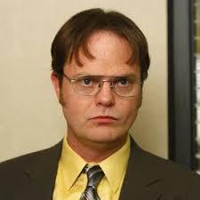
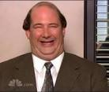
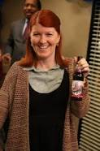

Welcome!
In this page, you will find all things Office related
Reasons I like The Office
- It is funny
- The characters are funny
- It makes me laugh
How to watch The Office
- Get a netflix account
- Search up The Office in netflix
- Click The Office
- Watch
- Enjoy and fall in love with the Office
Click for a funny video featuring the best Office cold openings
If you enjoyed that one, you will surely like this one.
My favorite Office characters
| Michael Scott | He is so naive, interesting, and just dumb, but he has a good heart. |  |
|---|---|---|
| Dwight Schrute | He is just hilarious. |  |
| Kevin Malone | He is so dumb, but he is the best type of dumb. |  |
| Meredith Palmer | She is a problem filled alchoholic mom. |  |
Click into the links below to explore the page even more!
All in all, the Office has given me hope and laughter. Working in an office day after day is always portrayed to be so boring and sad, however, the Office has showed me that it is not. There are so many individual people with their own quirks, and the Office has made me feel so much better about the daily office life which simply used to seem so depressing. This show will save you from a bad day. It will save you from a good day. It is simply one of the best shows that was ever made. As Michael would say... the only time I set the bar low is for limbo, and the Office has definitely not set the bar low for TV shows.